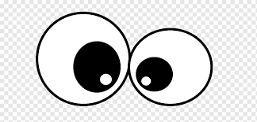
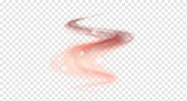
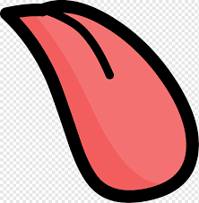

En este párrafo voy a usar la ñ.
Listo.
Los músculos de nuestros ojos se mueven mucho más de lo que imaginas… ¡Aproximadamente 100.000 veces al día!
Cada persona tiene su aroma único, debido a las feromonas. Excepto los gemelos idénticos, que tienen exactamente el mismo olor.
La lengua se está moviendo todo el día. Se expande, se contrae, se aplana, se vuelve a contraer. Al final del día, lo más probable es que la lengua haya hecho varios miles de movimientos.
